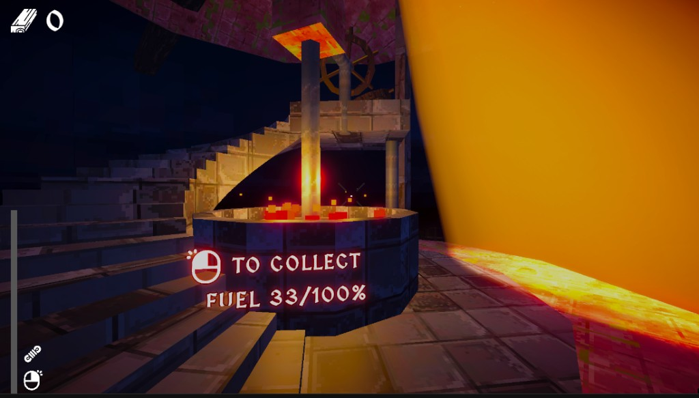

Ludum Dare 59 · Game Jam
Beacon Bound
First-person adventure on a mist-shrouded island where relighting the beacon and guiding ships out of the fog drives progression.
- Role
- Gameplay & Systems Programmer
- Timeline
- 2 days
- Team Size
- Solo

Project highlight
- Heavy focus on lighting and mood: authored a custom beacon shader that reads like a volumetric spotlight driving the focal beam.
- Added a depth-based fog shader that fades scene detail using the depth buffer for a soft, readable horizon.
- Tuned post-processing—contrast and color grading—to lock the cold coastal palette and sell the “lost in the mist” atmosphere.
What I built
- Built a playable level where lighting leads the player between objectives, clarifies the core loop, and reinforces what to do next without heavy UI reliance.
- Implemented level generation and ship routing so arrivals and paths stay coherent with the island layout.
- Owned a large share of environment work plus post-processing and lighting to sell atmosphere and readability.
Challenges
- As a solo 48-hour scope, balancing readable beacon-driven direction, generation and route logic, and polished environmental presentation required tight prioritization and fast iteration.
Results & impact
- Delivered a complete Ludum Dare 59 entry with a playable build published on itch.io.